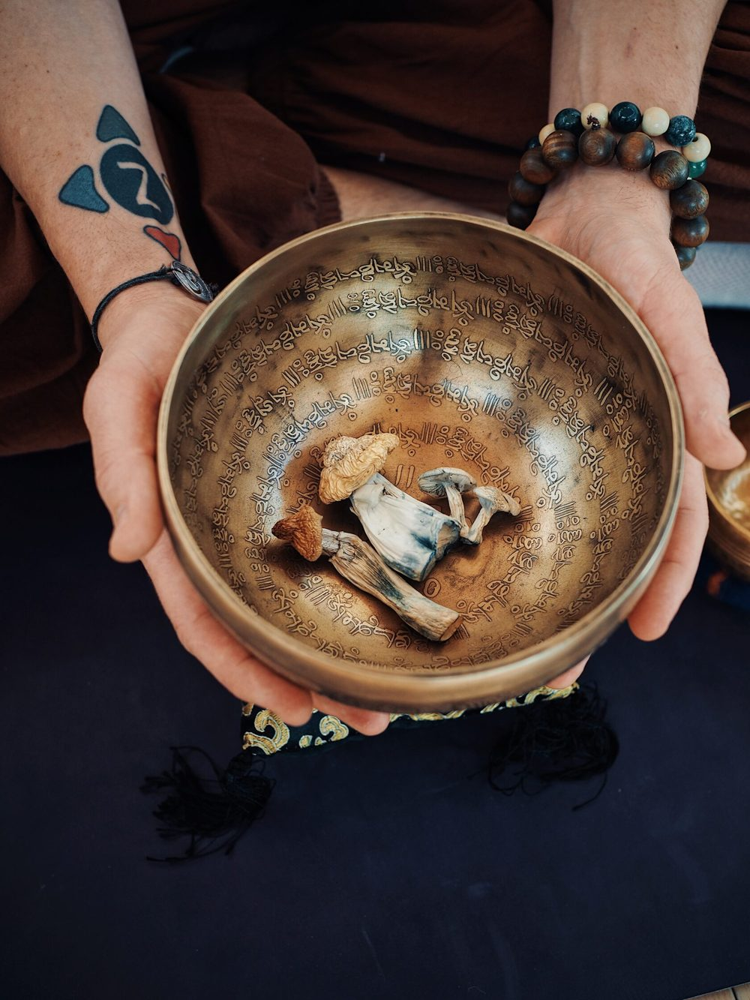

Yoga Classes
Classical yoga in the Hatha and Ashtanga traditions, open to every level, taught in Russian or English. Group class weekly, private sessions on request.

Classical yoga to prepare for the journey, stay grounded in it, and carry it home.
Psychedelics can open a door. What you do before and after is what makes the change last.
YogaCybin pairs classical yoga with entheogens. Asana, breath and meditation steady the body and mind before a journey, keep you grounded during it, and give you a way to keep working with what it showed you, long after it ends.

Classical yoga in the Hatha and Ashtanga traditions, open to every level, taught in Russian or English. Group class weekly, private sessions on request.
Pranayama and guided meditation: simple tools to quiet the mind that you can use anywhere.
Sitting and facilitation, individual and group yoga programs, and mentorship, for my own retreats or yours.
Ongoing support after a journey, so the insight turns into a practice instead of a memory.
Every Tuesday
7:00 – 9:00 pm
Harmonist Sanctuary
4633 E. Colfax Ave., Denver, CO 80220
Two unhurried hours of asana, pranayama and stillness, taught by Pasha in Russian. Come as you are; beginners are welcome. Classes in English and private sessions are available on request.
Save a spotSmall-group retreats where daily yoga and a guided psychedelic experience are woven together.
Yoga, breathwork and conversation to settle the body and set an intention.
A guided session in a calm, supported setting, with a sitter present throughout.
Movement, rest and reflection to carry what you found into daily life.
Retreat dates are being planned. Get in touch to hear first.

Founder · RYT200 Yoga Instructor · Psychedelic Retreat Sitter & Facilitator
In 2016 I met psilocybin mushrooms for the first time, and they changed the course of my life. They helped me see, accept and heal my own traumas, and finally accept myself as I am.
But the medicine is not a one-session cure. I started YogaCybin because classical yoga gives you what a single journey can't: tools that stay with you, so your healing doesn't depend on the next retreat, therapist or “healer”.
For classes, private sessions or retreat enquiries.
info@yogacybin.com (888) 880-YOGA